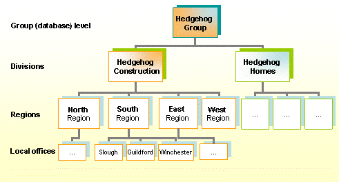
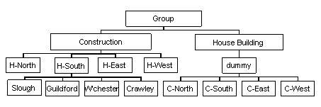

Organation Structure
If you are using "status by view" to manage the supply chain relationships, you must define the structure of your organation within : use Organation Structure.
Strictly speaking, the organational structure relates to views of the database; it does not necessarily have to relate to the actual structure of your organation. You may, however, want to relate it to, for example, your GL structure.
The organational structure determines the views that are available in the Company Information and SRM workbenches. You can define up to five levels of organation; level 1 is the top level which shows the entire database (that is, all companies in the Company Information workbench).

To define your organation structure:
- Go to Organation Structure.
- Create one record for level 1.
- Create records for each of the entities (for example, ) at level 2. Give each one an Entity Code to identify it (for example, the name of the company).
- Create records for each lower level in the same way. Set the Parent to the relevant entity from the level above. For example if the Slough office is in the South region, set the Parent of Slough to South.
You cannot have more than one entity with the same entity code, even if they have different parents. You would have to distinguish them in some way. For example, if your organation has a construction division and a housebuilding division, both of which are split into North, South, East and West regions, you would need to call the regions something like "Construction North", "Housebuilding East" and so on.
Also, if you want a simpler hierarchy in one division (for example, if you want the construction division to be able to update the company status codes at regional level, but the housebuilding division to update the codes at office level), you need to set up a "dummy" level with a single entity, so that the entities that update the status codes are at the same level in the hierarchy.

Configuration
The CI parameters LEVEL1 to LEVEL5 determine the names of the different levels in the structure.